Change analysis for Jordan for PRIMAP-hist v2.5.1_final compared to
v2.5_final
Overview over
emissions by sector and gas
The following figures show the aggregate national total emissions
excluding LULUCF AR6GWP100 for the country reported priority scenario.
The dotted linesshow the v2.5_final data.
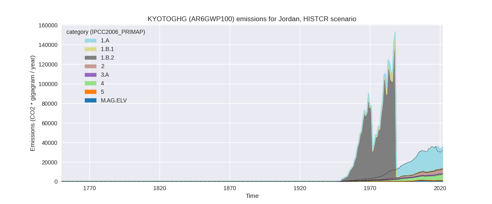
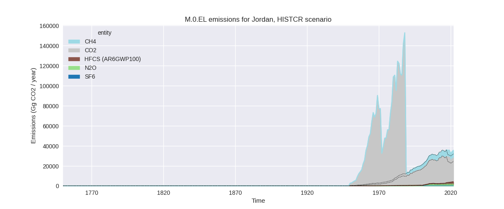
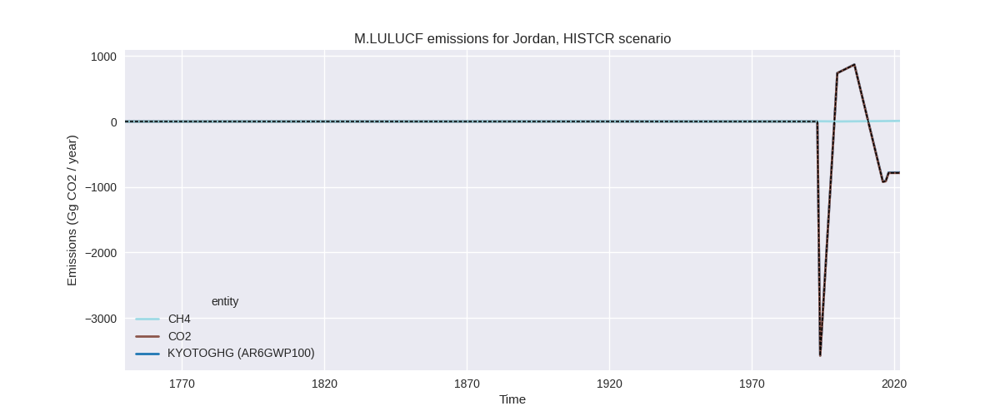
The following figures show the aggregate national total emissions
excluding LULUCF AR6GWP100 for the third party priority scenario. The
dotted linesshow the v2.5_final data.
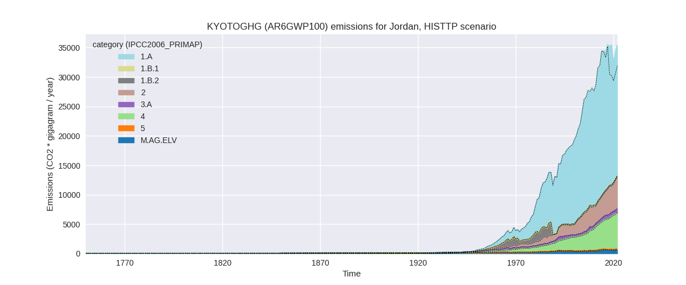
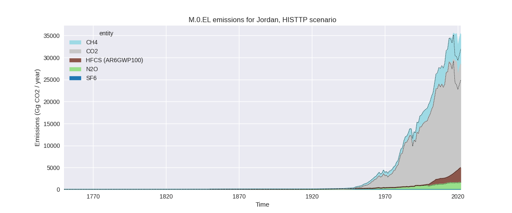
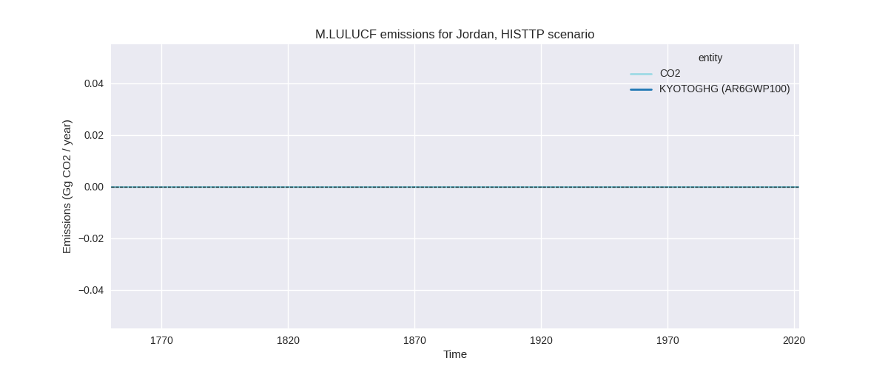
Overview over changes
In the country reported priority scenario we have the following
changes for aggregate Kyoto GHG and national total emissions excluding
LULUCF (M.0.EL):
- Emissions in 2022 have changed by 11.6%% (3719.36 Gg CO2 / year)
- Emissions in 1990-2022 have changed by 1.7%% (452.88 Gg CO2 / year)
In the third party priority scenario we have the following changes
for aggregate Kyoto GHG and national total emissions excluding LULUCF
(M.0.EL):
- Emissions in 2022 have changed by 10.9%% (3468.41 Gg CO2 / year)
- Emissions in 1990-2022 have changed by 2.2%% (545.57 Gg CO2 / year)
Most
important changes per scenario and time frame
In the country reported priority scenario the
following sector-gas combinations have the highest absolute impact on
national total KyotoGHG (AR6GWP100) emissions in 2022
(top 5):
- 1: 1.A, CO2 with 3402.23 Gg CO2 / year (18.3%)
- 2: M.AG.ELV, N2O with 227.29 Gg CO2 / year (39.4%)
- 3: 4, CH4 with 203.83 Gg CO2 / year (3.5%)
- 4: 2, CO2 with -71.73 Gg CO2 / year (-3.9%)
- 5: 1.B.2, CH4 with 42.04 Gg CO2 / year (7.6%)
In the country reported priority scenario the
following sector-gas combinations have the highest absolute impact on
national total KyotoGHG (AR6GWP100) emissions in
1990-2022 (top 5):
- 1: 1.A, CO2 with 456.95 Gg CO2 / year (2.6%)
- 2: 2, CO2 with -23.16 Gg CO2 / year (-1.2%)
- 3: M.AG.ELV, N2O with 13.03 Gg CO2 / year (2.5%)
- 4: 4, CH4 with 6.18 Gg CO2 / year (0.2%)
- 5: M.AG.ELV, CO2 with 6.01 Gg CO2 / year (40.8%)
In the third party priority scenario the following
sector-gas combinations have the highest absolute impact on national
total KyotoGHG (AR6GWP100) emissions in 2022 (top
5):
- 1: 1.A, CO2 with 3728.93 Gg CO2 / year (20.2%)
- 2: 4, CH4 with -139.70 Gg CO2 / year (-2.3%)
- 3: 2, N2O with -36.72 Gg CO2 / year (-5.7%)
- 4: 1.B.2, CH4 with -32.76 Gg CO2 / year (-25.1%)
- 5: 1.A, N2O with -28.10 Gg CO2 / year (-20.4%)
In the third party priority scenario the following
sector-gas combinations have the highest absolute impact on national
total KyotoGHG (AR6GWP100) emissions in 1990-2022 (top
5):
- 1: 1.A, CO2 with 659.09 Gg CO2 / year (3.9%)
- 2: 1.B.1, CH4 with -58.96 Gg CO2 / year (-79.4%)
- 3: 1.B.2, CH4 with -35.91 Gg CO2 / year (-24.9%)
- 4: 2, CO2 with -21.71 Gg CO2 / year (-1.5%)
- 5: M.AG.ELV, CO2 with 6.01 Gg CO2 / year (40.8%)
Notes on data changes
Here we list notes explaining important emissions changes for the
country. ’' means that the following text only applies to the TP time
series, while means that it only applies to the CR scenario. Otherwise
the note applies to both scenarios.
- 1.A, CO2: CDIAC 2023 shows less of an emissions
decline than EI data used in PRIMAP-hist v2.5 leading to higher
emissions for recent years in v2.5.1
- M.AG.ELV, N2O: 2022 emissions are higher due to
higher emissions for recent years in FAO 2023 data. Impact on cumulative
emissions is small. As we have also updated EDGAR data the 2022 value is
now obtained using EDGAR growth rates for 2021 to 2022 while we used
numerical extrapolation in v2.5 which further increases the 2022
difference.
Changes by sector and gas
For each scenario and time frame the changes are displayed for all
individual sectors and all individual gases. In the sector plot we use
aggregate Kyoto GHGs in AR6GWP100. In the gas plot we usenational total
emissions without LULUCF. ## country reported scenario
2022
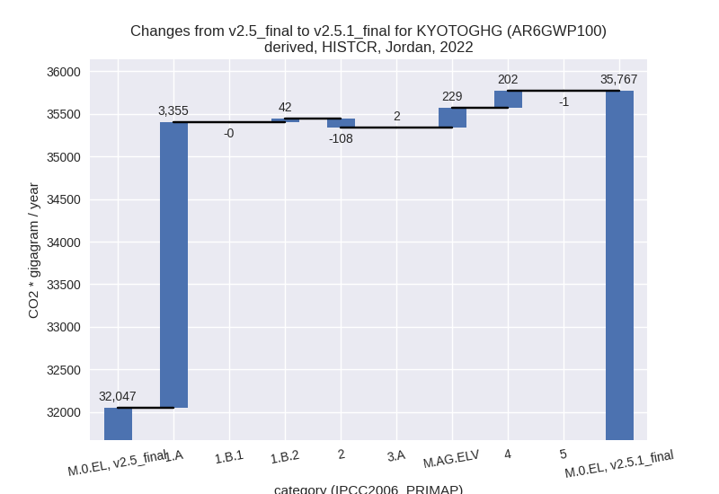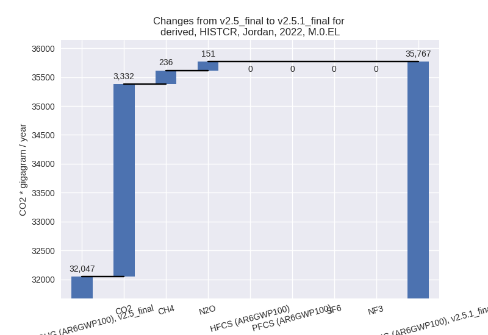
1990-2022
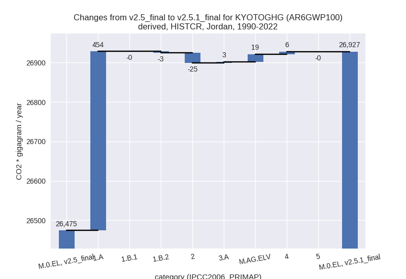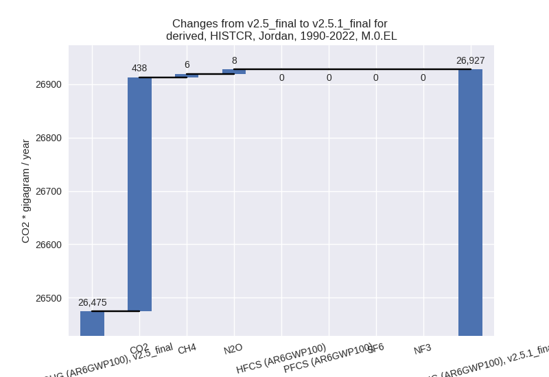
third party scenario
2022
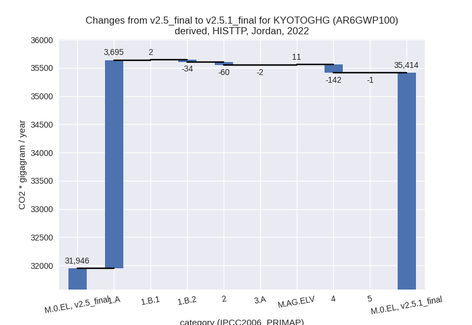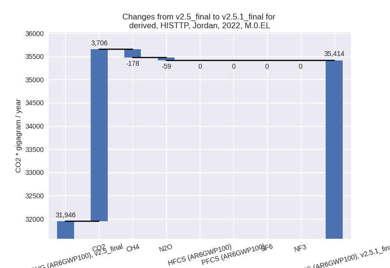
1990-2022
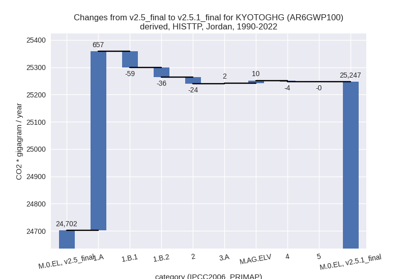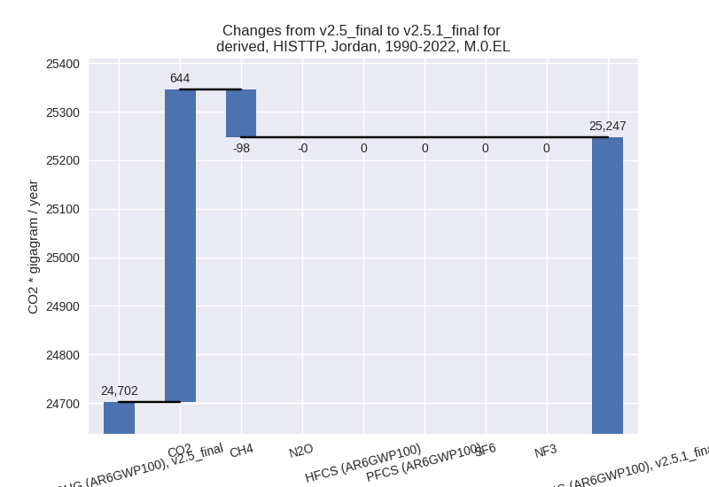
Detailed changes for the
scenarios:
country reported scenario
(HISTCR):
Most important changes
per time frame
For 2022 the following sector-gas combinations have
the highest absolute impact on national total KyotoGHG (AR6GWP100)
emissions in 2022 (top 5):
- 1: 1.A, CO2 with 3402.23 Gg CO2 / year (18.3%)
- 2: M.AG.ELV, N2O with 227.29 Gg CO2 / year (39.4%)
- 3: 4, CH4 with 203.83 Gg CO2 / year (3.5%)
- 4: 2, CO2 with -71.73 Gg CO2 / year (-3.9%)
- 5: 1.B.2, CH4 with 42.04 Gg CO2 / year (7.6%)
For 1990-2022 the following sector-gas combinations
have the highest absolute impact on national total KyotoGHG (AR6GWP100)
emissions in 1990-2022 (top 5):
- 1: 1.A, CO2 with 456.95 Gg CO2 / year (2.6%)
- 2: 2, CO2 with -23.16 Gg CO2 / year (-1.2%)
- 3: M.AG.ELV, N2O with 13.03 Gg CO2 / year (2.5%)
- 4: 4, CH4 with 6.18 Gg CO2 / year (0.2%)
- 5: M.AG.ELV, CO2 with 6.01 Gg CO2 / year (40.8%)
Changes in the main sectors for aggregate KyotoGHG (AR6GWP100)
are
- 1: Total sectoral emissions in 2022 are 22877.86 Gg
CO2 / year which is 64.0% of M.0.EL emissions. 2022 Emissions have
changed by 17.4% (3396.80 Gg CO2 /
year). 1990-2022 Emissions have changed by 2.5% (450.37 Gg CO2 / year). For 2022 the
changes per gas
are:
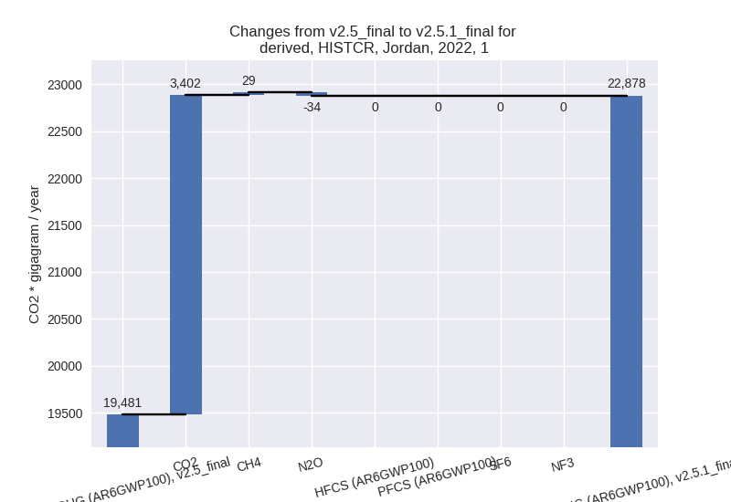
For 1990-2022 the changes per gas
are:
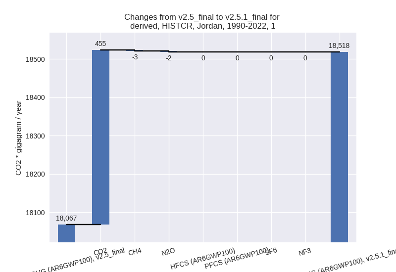
The changes come from the following subsectors:
- 1.A: Total sectoral emissions in 2022 are 22259.32
Gg CO2 / year which is 97.3% of category 1 emissions. 2022 Emissions
have changed by 17.7% (3354.77 Gg
CO2 / year). 1990-2022 Emissions have changed by 2.6% (453.74 Gg CO2 / year). For 2022 the
changes per gas
are:
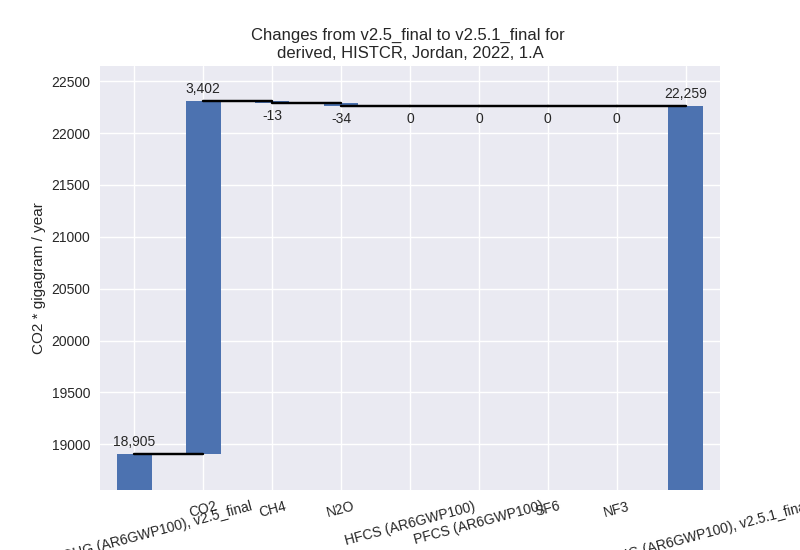
For 1990-2022 the changes per gas
are:
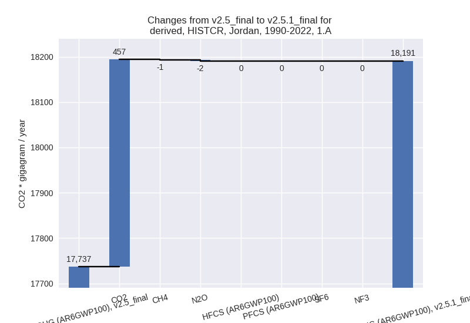
There is no subsector information available in PRIMAP-hist.
- 1.B.1: Total sectoral emissions in 2022 are 0.83 Gg
CO2 / year which is 0.0% of category 1 emissions. 2022 Emissions have
changed by -1.7% (-0.01 Gg CO2 /
year). 1990-2022 Emissions have changed by -1.1% (-0.01 Gg CO2 / year).
- 1.B.2: Total sectoral emissions in 2022 are 617.72
Gg CO2 / year which is 2.7% of category 1 emissions. 2022 Emissions have
changed by 7.3% (42.04 Gg CO2 /
year). 1990-2022 Emissions have changed by -1.0% (-3.36 Gg CO2 / year). For 2022 the
changes per gas
are:
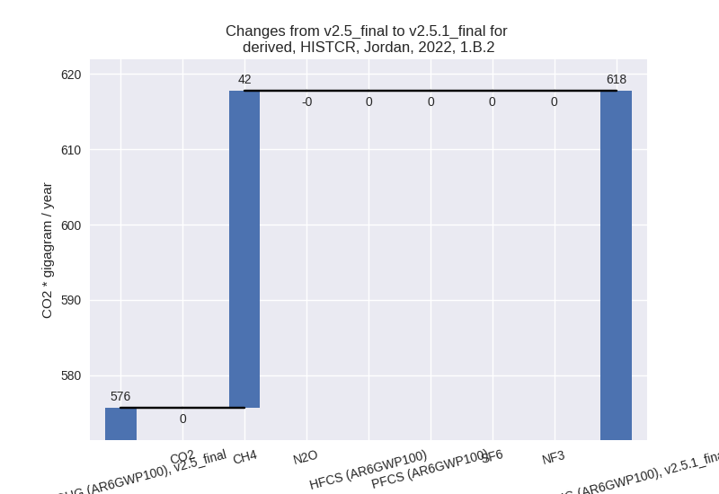
There is no subsector information available in PRIMAP-hist.
- 2: Total sectoral emissions in 2022 are 4770.83 Gg
CO2 / year which is 13.3% of M.0.EL emissions. 2022 Emissions have
changed by -2.2% (-108.45 Gg CO2 /
year). 1990-2022 Emissions have changed by -0.8% (-25.38 Gg CO2 / year). For 2022 the
changes per gas
are:
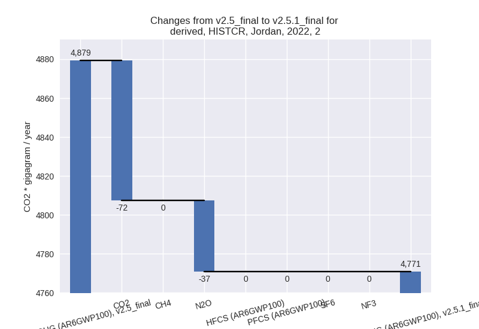
- M.AG: Total sectoral emissions in 2022 are 1786.53
Gg CO2 / year which is 5.0% of M.0.EL emissions. 2022 Emissions have
changed by 14.8% (230.45 Gg CO2 /
year). 1990-2022 Emissions have changed by 1.8% (21.82 Gg CO2 / year). For 2022 the
changes per gas
are:
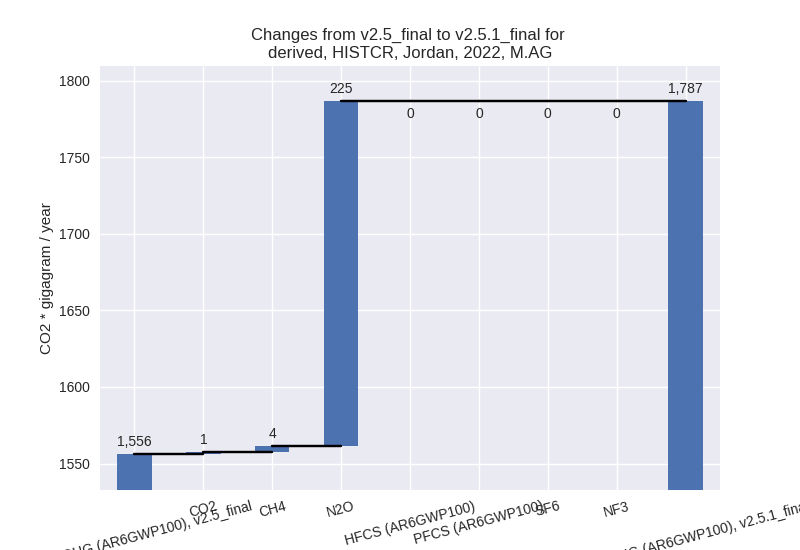
The changes come from the following subsectors:
- 3.A: Total sectoral emissions in 2022 are 961.02 Gg
CO2 / year which is 53.8% of category M.AG emissions. 2022 Emissions
have changed by 0.2% (1.70 Gg CO2 /
year). 1990-2022 Emissions have changed by 0.4% (2.75 Gg CO2 / year).
- M.AG.ELV: Total sectoral emissions in 2022 are
825.51 Gg CO2 / year which is 46.2% of category M.AG emissions. 2022
Emissions have changed by 38.3%
(228.75 Gg CO2 / year). 1990-2022 Emissions have changed by 3.5% (19.07 Gg CO2 / year). For 2022 the
changes per gas
are:
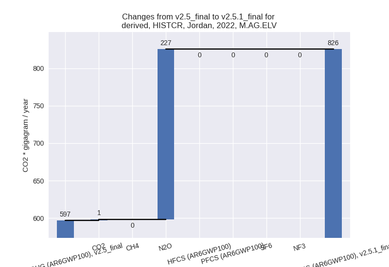
For 1990-2022 the changes per gas
are:
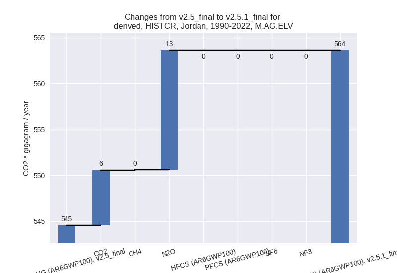
There is no subsector information available in PRIMAP-hist.
- 4: Total sectoral emissions in 2022 are 6182.24 Gg
CO2 / year which is 17.3% of M.0.EL emissions. 2022 Emissions have
changed by 3.4% (201.95 Gg CO2 /
year). 1990-2022 Emissions have changed by 0.1% (6.12 Gg CO2 / year). For 2022 the
changes per gas
are:
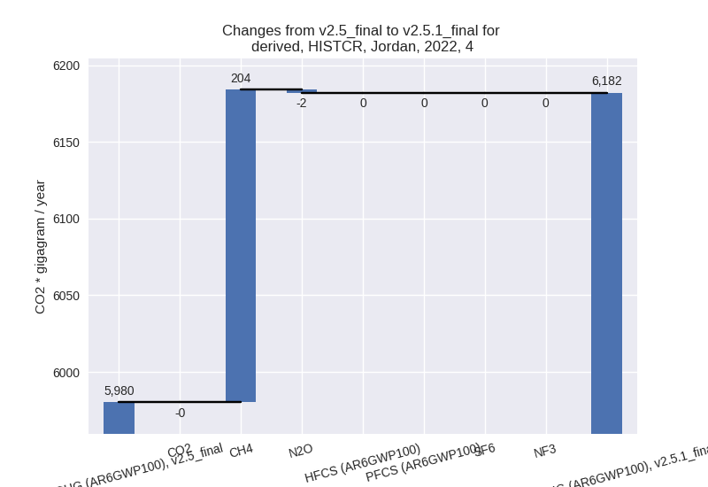
- 5: Total sectoral emissions in 2022 are 149.32 Gg
CO2 / year which is 0.4% of M.0.EL emissions. 2022 Emissions have
changed by -0.9% (-1.39 Gg CO2 /
year). 1990-2022 Emissions have changed by -0.0% (-0.04 Gg CO2 / year).
third party scenario (HISTTP):
Most important changes
per time frame
For 2022 the following sector-gas combinations have
the highest absolute impact on national total KyotoGHG (AR6GWP100)
emissions in 2022 (top 5):
- 1: 1.A, CO2 with 3728.93 Gg CO2 / year (20.2%)
- 2: 4, CH4 with -139.70 Gg CO2 / year (-2.3%)
- 3: 2, N2O with -36.72 Gg CO2 / year (-5.7%)
- 4: 1.B.2, CH4 with -32.76 Gg CO2 / year (-25.1%)
- 5: 1.A, N2O with -28.10 Gg CO2 / year (-20.4%)
For 1990-2022 the following sector-gas combinations
have the highest absolute impact on national total KyotoGHG (AR6GWP100)
emissions in 1990-2022 (top 5):
- 1: 1.A, CO2 with 659.09 Gg CO2 / year (3.9%)
- 2: 1.B.1, CH4 with -58.96 Gg CO2 / year (-79.4%)
- 3: 1.B.2, CH4 with -35.91 Gg CO2 / year (-24.9%)
- 4: 2, CO2 with -21.71 Gg CO2 / year (-1.5%)
- 5: M.AG.ELV, CO2 with 6.01 Gg CO2 / year (40.8%)
Changes in the main sectors for aggregate KyotoGHG (AR6GWP100)
are
- 1: Total sectoral emissions in 2022 are 22522.72 Gg
CO2 / year which is 63.6% of M.0.EL emissions. 2022 Emissions have
changed by 19.4% (3663.34 Gg CO2 /
year). 1990-2022 Emissions have changed by 3.3% (562.08 Gg CO2 / year). For 2022 the
changes per gas
are:
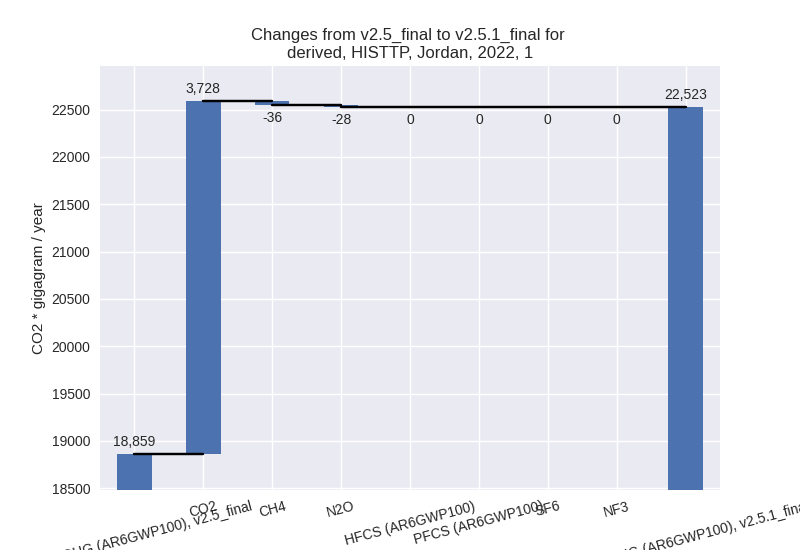
For 1990-2022 the changes per gas
are:
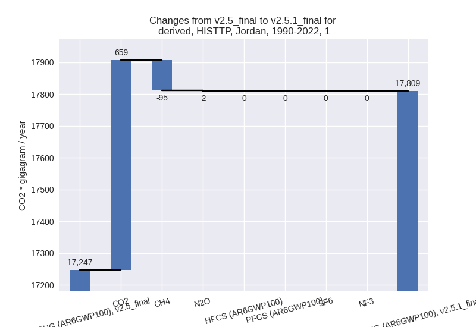
The changes come from the following subsectors:
- 1.A: Total sectoral emissions in 2022 are 22361.59
Gg CO2 / year which is 99.3% of category 1 emissions. 2022 Emissions
have changed by 19.8% (3694.86 Gg
CO2 / year). 1990-2022 Emissions have changed by 3.9% (656.61 Gg CO2 / year). For 2022 the
changes per gas
are:
For 1990-2022 the changes per gas
are:
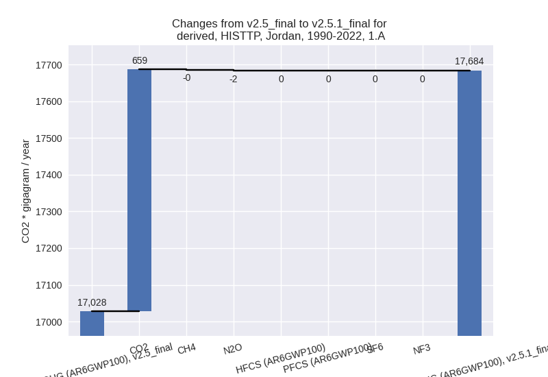
There is no subsector information available in PRIMAP-hist.
- 1.B.1: Total sectoral emissions in 2022 are 63.19
Gg CO2 / year which is 0.3% of category 1 emissions. 2022 Emissions have
changed by 3.7% (2.25 Gg CO2 /
year). 1990-2022 Emissions have changed by -78.4% (-58.97 Gg CO2 / year). For 2022
the changes per gas
are:
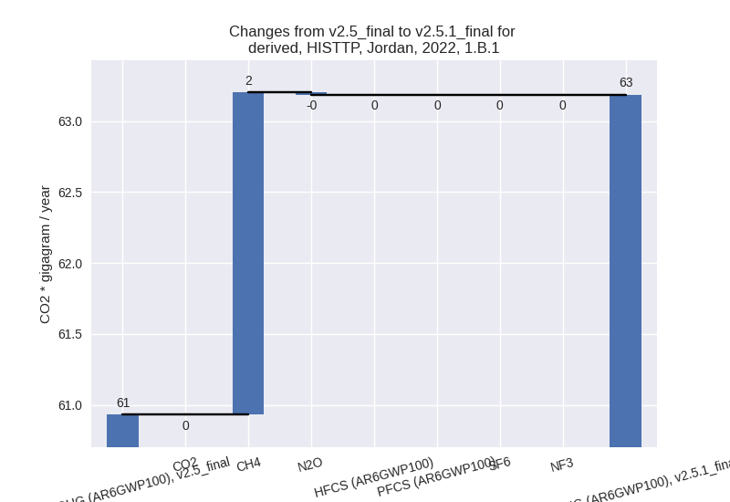
For 1990-2022 the changes per gas
are:
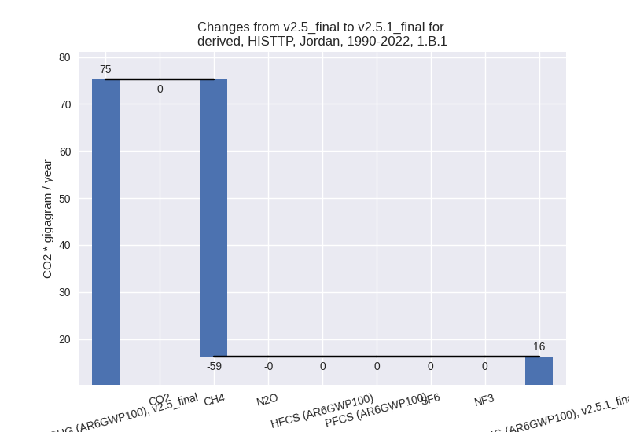
There is no subsector information available in PRIMAP-hist.
- 1.B.2: Total sectoral emissions in 2022 are 97.94
Gg CO2 / year which is 0.4% of category 1 emissions. 2022 Emissions have
changed by -25.6% (-33.77 Gg CO2 /
year). 1990-2022 Emissions have changed by -24.6% (-35.56 Gg CO2 / year). For 2022
the changes per gas
are:
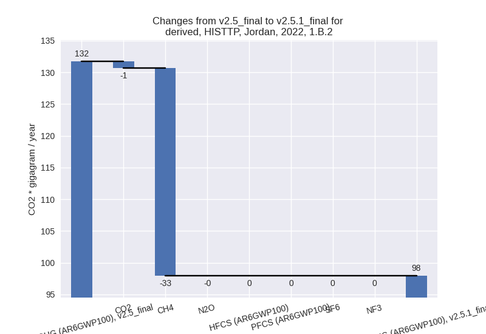
For 1990-2022 the changes per gas
are:
There is no subsector information available in PRIMAP-hist.
- 2: Total sectoral emissions in 2022 are 5337.06 Gg
CO2 / year which is 15.1% of M.0.EL emissions. 2022 Emissions have
changed by -1.1% (-60.47 Gg CO2 /
year). 1990-2022 Emissions have changed by -0.8% (-23.93 Gg CO2 / year).
- M.AG: Total sectoral emissions in 2022 are 1333.14
Gg CO2 / year which is 3.8% of M.0.EL emissions. 2022 Emissions have
changed by 0.7% (9.39 Gg CO2 /
year). 1990-2022 Emissions have changed by 1.2% (11.78 Gg CO2 / year).
- 4: Total sectoral emissions in 2022 are 6071.69 Gg
CO2 / year which is 17.1% of M.0.EL emissions. 2022 Emissions have
changed by -2.3% (-142.47 Gg CO2 /
year). 1990-2022 Emissions have changed by -0.1% (-4.32 Gg CO2 / year). For 2022 the
changes per gas
are:
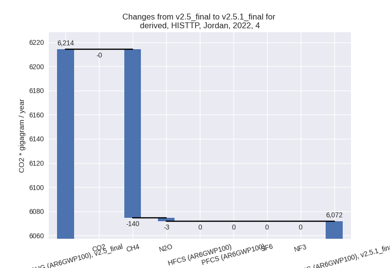
- 5: Total sectoral emissions in 2022 are 149.32 Gg
CO2 / year which is 0.4% of M.0.EL emissions. 2022 Emissions have
changed by -0.9% (-1.39 Gg CO2 /
year). 1990-2022 Emissions have changed by -0.0% (-0.04 Gg CO2 / year).